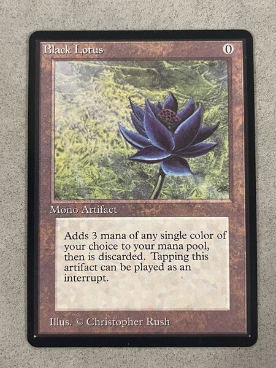

In a difficult decision made for a greater cause, I am selling off my prized Magic: The Gathering card collection. For years, this collection has been my passion, a curated archive of lore and power spanning decades of the game's rich history. This isn't just a random assortment of cards; it's a meticulously built treasury of iconic pieces, from the early days of Alpha to the modern masterpieces of today. Each card represents countless hours of strategy, the thrill of opening a rare pack, and the camaraderie of sharing a hobby with friends.
The cornerstone of this collection is a selection of highly sought-after cards that have defined the game for generations. It includes an original Black Lotus in excellent condition, a full set of the Power Nine, and several foil mythic rares from various sets. Beyond the value, these cards are artifacts of a game that has shaped a community and inspired a new generation of players. Every card has been carefully sleeved and stored, ensuring its pristine condition.

This sale is a bittersweet moment, as I trade a cherished part of my past for the promise of my future. The funds from this collection will go directly toward paying my tuition, allowing me to pursue my education and build a new path. While it’s hard to let go, the opportunity to learn and grow is an investment worth making, even if it means parting with a collection that has brought me so much joy.